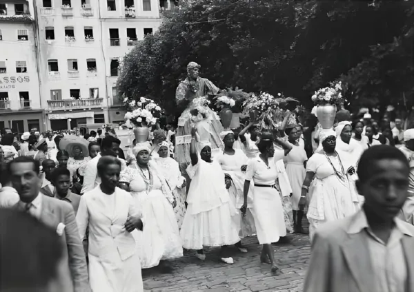
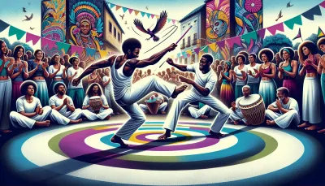
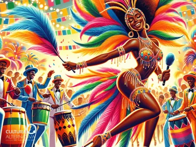
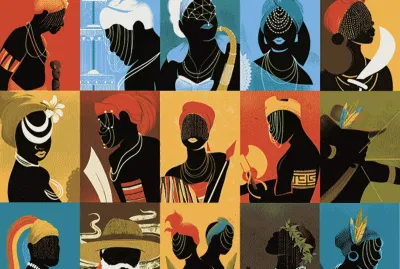
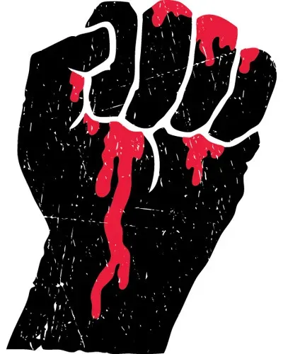
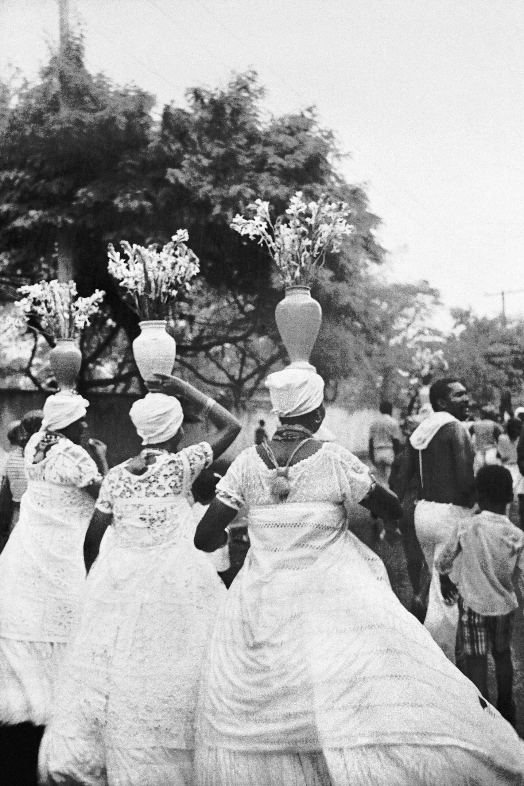

Um projeto sobre a importância de preservar e divulgar a memória e a cultura afro-brasileira através do patrimônio digital.
Conheça o ProjetoO Museu Digital Afro-Brasileiro é um projeto inspirado no Museu Afro-Digital da Memória Africana e Afro-Brasileira da UFBA, que surgiu para preservar e divulgar a herança cultural afro-brasileira.
Ele foi baseado no artigo "The Dilemmas of Digital Patrimonialization: The Digital Museum of African and Afro-Brazilian Memory" de Livio Sansone (2013), que mostra como as tecnologias digitais podem ajudar a democratizar o acesso à memória e à cultura dos povos africanos e afro-descendentes.
O museu funciona como um espaço de democratização da memória, estimulando o uso das memórias sociais de minorias étnicas e movimentos sociais.

Conheça os principais temas abordados pelo Museu Digital, refletindo a diversidade cultural afro-brasileira.

Arte marcial afro-brasileira que combina luta, dança e música. Patrimônio Cultural Imaterial da Humanidade pela UNESCO.

Expressões culturais centrais da identidade brasileira com raízes profundas nas tradições africanas.

Candomblé, Umbanda e outras religiões que preservam os saberes e rituais trazidos da África.

Registros históricos da luta do povo negro por igualdade, liberdade e reconhecimento social.
O Museu Digital trabalha com três categorias de documentos para preservar e divulgar a memória afro-brasileira:
Cópias digitais recuperadas de coleções já existentes em arquivos nacionais e internacionais, como o Arquivo Nacional, a Biblioteca Nacional e instituições estrangeiras.
Produção acadêmica e documentos fornecidos por pesquisadores da rede, incluindo materiais produzidos durante campo e estudos sobre cultura afro-brasileira.
Testemunhos, fotografias, gravações sonoras e entrevistas produzidas pelo próprio museu, capturando memórias vivas de lideranças, mães e pais de santo e ativistas.
O artigo de Sansone identifica quatro conceitos políticos que orientam a criação de acervos digitais afro-brasileiros:
Sugere que arquivos estrangeiros conservem os originais, mas compartilhem cópias digitais livremente, permitindo que pesquisadores analisem documentos sem viajar ao exterior.
Política de disponibilização de documentos anteriormente difíceis de acessar, inspirando práticas de doação digital por meio da plataforma online do museu.
Método que combina pesquisa de campo com digitalização móvel, criando um "museu itinerante" que busca seu público e gera momentos de dramatização da memória.
Compartilhamento de dados secundários e primários, experiências de pesquisa e fontes, utilizando a internet como forma de democratizar o conhecimento.

No Brasil, pouco foi feito para preservar a memória dos conflitos e da vida cotidiana da população afro-brasileira. Museus, galerias e arquivos especializados são poucos e em mau estado.
A Lei Federal nº 10.639, de 9 de maio de 2003, altera a Lei nº 9.394, de 20 de dezembro de 1996 (Lei de Diretrizes e Bases da Educação Nacional), estabelecendo a obrigatoriedade do ensino de história e cultura afro-brasileira e africana nos estabelecimentos de ensino públicos e particulares.
A lei determina que o conteúdo programático inclua o estudo da história da África e dos africanos, a luta dos negros no Brasil, a cultura negra brasileira e o combate ao racismo.
Como afirma Sansone, a implementação efetiva da Lei 10.639 não é possível sem a preservação de coleções de documentos, imagens visuais e materiais audiovisuais. É necessário preservar memórias, sons e imagens que documentem a experiência afro-brasileira.
Publicação da Lei nº 10.639, tornando obrigatório o ensino de história e cultura afro-brasileira.
Criação do Museu Afro-Digital da UFBA, iniciando a digitalização de acervos.
Primeiro seminário nacional de lançamento do Museu Digital, com equipes em 4 estados.
Publicação do artigo de Livio Sansone sobre os dilemas da patrimonialização digital.
O Museu Digital continua expandindo seu acervo e rede de colaboradores em todo o Brasil.
da população brasileira se autodeclara negra ou parda (IBGE 2022)
anos desde a promulgação da Lei 10.639
pesquisadores na rede internacional do Museu Afro-Digital